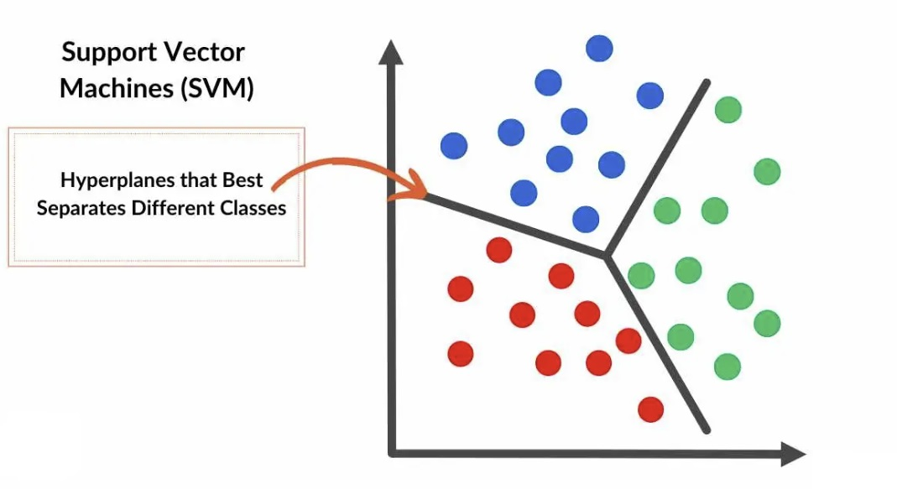

Decision Trees and Support Vector Machines
In Unit 4, we delve into two powerful machine learning approaches: Classification and Regression Trees (CART) and Support Vector Machines (SVM). For CART, we explore model representation, learning from data to create decision rules, and using the model for predictions. Additionally, we emphasize the importance of data preprocessing to ensure accurate and efficient model performance. For SVM, we study how the model represents data, learns from it to separate classes or predict outcomes, and applies the learned model to make predictions on new data. Data preparation is particularly crucial for SVM to optimize its performance and handle complex datasets effectively.
Decision trees
What is a Decision tree?
A decision tree is a non-parametric supervised learning algorithm, which is utilized for both classification and regression tasks.
It has a hierarchical, tree structure, which consists of a root node, branches, internal nodes and leaf nodes.
As you can see from the diagram below, a decision tree starts with a root node, which does not have any incoming branches.
The outgoing branches from the root node then feed into the internal nodes, also known as decision nodes.
Based on the available features, both node types conduct evaluations to form homogenous subsets, which are denoted by leaf nodes, or terminal nodes.
The leaf nodes represent all the possible outcomes within the dataset.
Structure
As you can see from the diagram below, a decision tree starts with a root node, which does not have any incoming branches.
The outgoing branches from the root node then feed into the internal nodes, also known as decision nodes.
Based on the available features, both node types conduct evaluations to form homogenous subsets, which are denoted by leaf nodes, or terminal nodes.
The leaf nodes represent all the possible outcomes within the dataset.

Types of decision trees
- ID3: This algorithm was created by Ross Quinlan and leverages entropy and information gain as metrics to evaluate candidate splits. Some of Quinlan’s research on this algorithm from 1986 can be found here
- C4.5: This algorithm is considered a later iteration of ID3, which was also developed by Quinlan. It can use information gain or gain ratios to evaluate split points within the decision trees.
- CART: The term, CART, is an abbreviation for “classification and regression trees” and was introduced by Leo Breiman. This algorithm typically utilizes Gini impurity to identify the ideal attribute to split on. Gini impurity measures how often a randomly chosen attribute is misclassified. When evaluating using Gini impurity, a lower value is more ideal.
Support Vector Machines (SVM)
A Support Vector Machine (SVM) is a powerful machine learning algorithm widely used for both linear and nonlinear classification,
as well as regression and outlier detection tasks. SVMs are highly adaptable, making them suitable for various applications such as text classification,
image classification, spam detection, handwriting identification, gene expression analysis, face detection, and anomaly detection.
SVMs are particularly effective because they focus on finding the maximum separating hyperplane between the different classes in the target feature,
making them robust for both binary and multiclass classification.
The primary objective of the SVM algorithm is to identify the optimal hyperplane in an N-dimensional space that can effectively separate data points into different classes in the feature space.
The algorithm ensures that the margin between the closest points of different classes, known as support vectors, is maximized.
The dimension of the hyperplane depends on the number of features.
For instance, if there are two input features, the hyperplane is simply a line, and if there are three input features, the hyperplane becomes a 2-D plane. As the number of features increases beyond three, the complexity of visualizing the hyperplane also increases.

Web bibliography
- https://www.ibm.com/topics/decision-trees
- https://www.geeksforgeeks.org/support-vector-machine-algorithm/